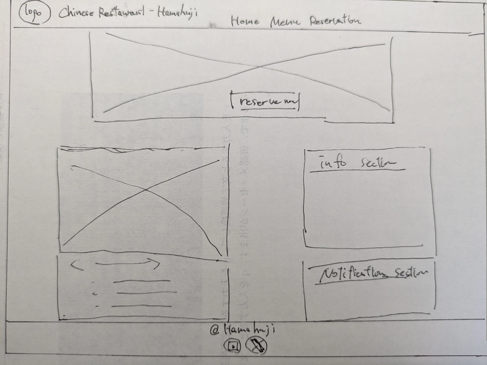
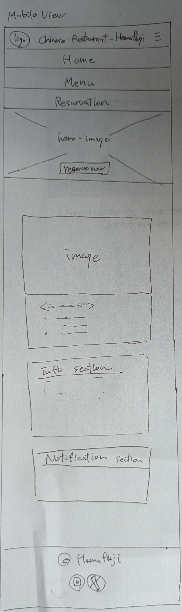

Site Name: Chinese Restaurant - Hamafuji
Reason: "Hamafuji" is the actual restaurant name that my friend (brother Hamada) run.
Example Domain: hamafuji.jp (Assuming Japan-focused business)
Reason: "Hamafuji" is the actual restaurant name that my friend (brother Hamada) run.
Example Domain: hamafuji.jp (Assuming Japan-focused business)
The official website for "Chinese Restaurant - Hamafuji" aims to attract customers and enhance the customer experience by conveying the authentic and warm appeal of our Chinese cuisine to the local community. Specifically, we will provide the latest menu information, and offer an online reservation feature. Our goal is to create an information hub that provides peace of mind and anticipation, making customers want to say, "I want to come back again!"
Anticipate questions a site visitor might have and consider how they connect to the website's content.
aim for a color schema that expresses "warmth" and "authenticity"
aim for a typography that suits to English letter and Chinese Restaurant style
Desktop View
Mobile View
